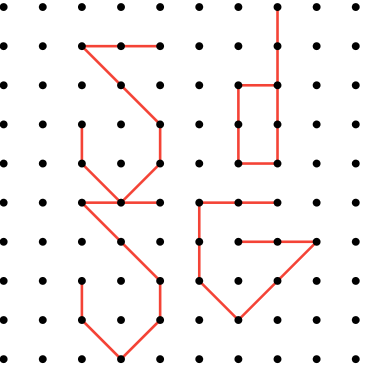

Woah buddy, didn’t you read?
These games require Wi-Fi.
That means teachers could see your screen.
This is the first build when it went to Google Drive.
It is strongly recommended to use the latest build and keep updating Project SDSG.
I added this so you can see how ancient these games were.
The legacy program works like this: it goes through all USB.zip versions and the first instance of ProjectSDSG.zip via the LGV# buttons.
No UI. Navigate with index. Sorry.